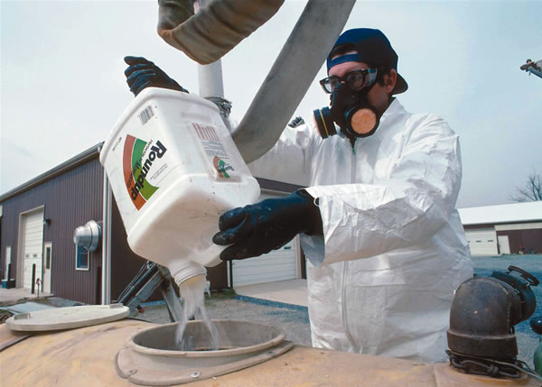

Two new scientific studies add to concerns about the dangers posed by Roundup (glyphosate), the most widely used weedkiller in the world.
A group of scientists from the University of Caen in France found that human placental cells are very sensitive to the herbicide at concentrations lower than the agricultural use, and that it disrupts human sex hormones. The scientists concluded that the herbicide could “induce reproduction problems” in humans.
In another study, University of Pittsburgh biologist Rick Relyea looked at the effect of Roundup on other life forms. Relyea found that the herbicide caused an 86-percent decline in the total population of tadpoles.
Glyphosate is marketed under several brand names - Roundup is Monsanto’s original brand; Syngenta now markets glyphosate as Touchdown Total. These products are widely used in yards and gardens across North America, and U.S. farmers spray millions of acres of crops with them each year. Drift problems are common, where the herbicide spray lands off the targeted area, killing plants.
Use of glyphosate products has increased in recent years as a result of the introduction of genetically modified (GM) varieties of corn, soybean and cotton designed to tolerate glyphosate sprays. (Normal, non-GM crops and other plants die when they are hit with glyphosate.)
Monsanto has sold Roundup since 1974, and the company continues to argue that the weedkiller is safe. (Visit Monsanto’s Web site to read the company’s responses to these studies.) Others disagree. The Journal of Pesticide Reform published one of the most comprehensive reviews of the dangers associated with glyphosate, written by Caroline Cox, staff scientist for the Northwest Coalition for Alternatives to Pesticides. Here’s a summary of her review:
“Every time there is another scientific study showing hazards to human health, to me it’s another reason why finding alternatives to pesticides is so important,” Cox recently told Mother Earth News.
To read Cox’s entire fact sheet on glyphosate, which cites 56 references, visit the Northwest Coalition for Alternatives to Pesticides.
|
 NRCS Above: A farmer mixes Roundup prior to application. Roundup is widely used in yards and gardens across North America, and U.S. farmers spray millions of acres of crops with it each year. |
|
|